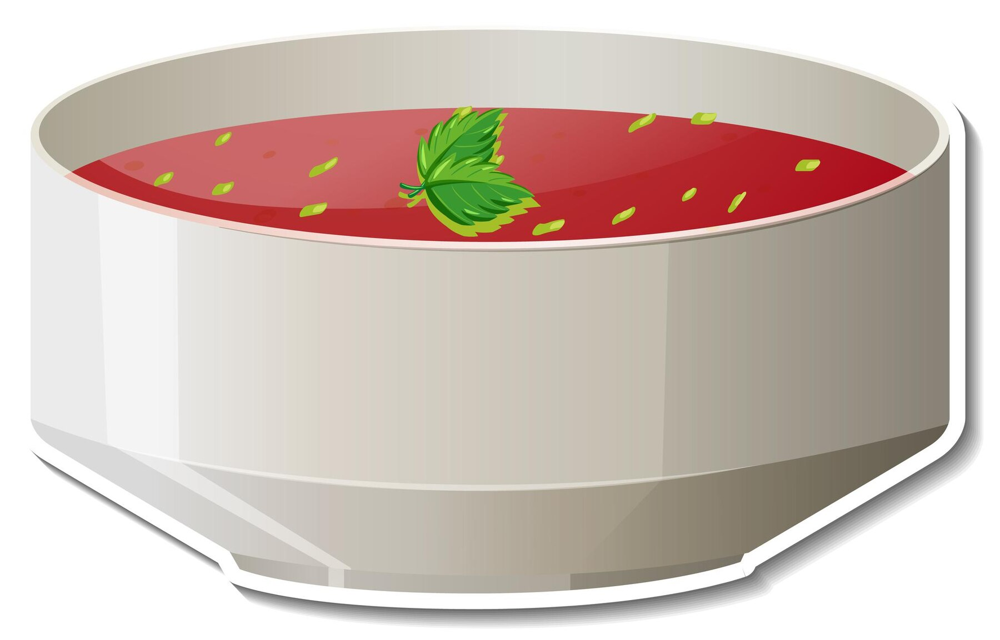

Tomato Soup

Description
Tomato soup is a warm, comforting dish made from pureed tomatoes, broth, and a variety of seasonings. It’s perfect for a chilly day and pairs wonderfully with grilled cheese sandwiches or crusty bread.
Ingredients
- 2 tablespoons olive oil
- 1 medium onion, chopped
- 2 cloves garlic, minced
- 2 cans diced tomatoes
- 2 cups vegetable or chicken broth
- 1 teaspoon sugar (optional, to balance acidity)
- Salt and pepper to taste
- 1/4 cup heavy cream (optional, for creamier soup)
- Fresh basil or parsley (optional, for garnish)
Steps
- Heat olive oil in a large pot over medium heat.
- Add chopped onion and sauté until softened, about 5 minutes.
- Add minced garlic and cook for another 30 seconds until fragrant.
- Stir in the diced tomatoes (with their juices) and vegetable broth. Bring to a simmer.
- Simmer for 20-25 minutes, allowing the flavors to meld together. You can adjust the heat to low after it starts simmering.
- Once the soup is ready, use an immersion blender to puree it until smooth. Alternatively, you can transfer the soup in batches to a blender and puree it (be careful as the soup is hot).
- If the soup is too thick, you can add a bit more broth or water to reach your desired consistency.
- Stir in the heavy cream if you want a creamier texture. Season with salt, pepper, and sugar to taste.
- Serve hot, garnished with fresh basil or parsley, if desired. Enjoy with a side of bread or grilled cheese!